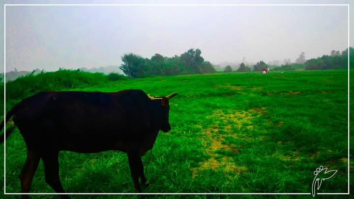
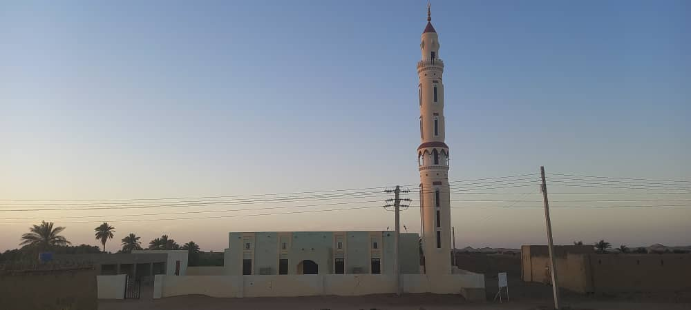
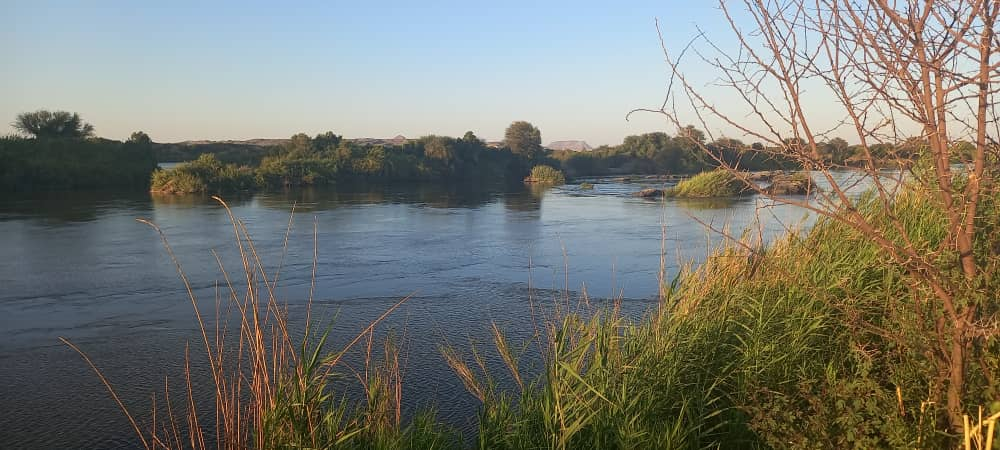

معرض قرية عطب

الثروة الحيوانية
تُشكل قطعان الأبقار والمواشي جزءًا أساسيًا من المشهد الريفي، حيث تختلط أصواتها مع حفيف الأشجار وهمس الرياح

سنابل القمح
تظهر مزارع القمح كسجّاد ذهبي يكسو الأرض، بينما تقف أشجار النخيل سامقةً خلفها كحرّاسٍ للتاريخ

مسجد القرية الكبير
مسجد القرية الكبير الذي يمثل مركزًا روحانيًا واجتماعيًا بارزًا، حيث يجسد تراثًا دينيًا عريقًا ويلعب دورًا محوريًا في حياة الأهالي.

y
نيلنا
ينساب النيل كشريان فضيّ محاطًا بأشجار النخيل السامقة، كأنهما خُلقا ليكمّل أحدهما الآخر. هذا المشهد ليس مجرد منظر طبيعي، بل هو للحياة في الصحراء.